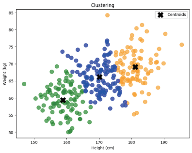

개념 학습
비지도학습과 군집 분석
비지도학습의 가장 대표적인 유형인 군집 분석은 데이터를 서로 비슷한 특성을 가진 그룹으로 묶는 것이다. 레이블이 없는 데이터를 사용해 군집 분석을 하면 서로 다른 특징을 가진 군집들로 나눌 수 있다.
군집 분석을 이용하면 키와 몸무게에 따라 서로 비슷한 특성을 가진 그룹으로 묶어 옷 크기의 패턴을 예측할 수 있다.
지도학습의 학습 데이터
| 키(cm) | 몸무게(kg) | 티셔츠 크기 |
|---|---|---|
| 160.5 | 48.5 | S |
| 172.5 | 59.5 | M |
| 177.4 | 67.2 | L |
지도학습에서는 ‘티셔츠 크기’라는 레이블이 있으므로 예측(분류)하고 싶은 속성이 무엇인지 명확한 기준이 있다.
비지도 학습의 학습 데이터
| 키(cm) | 몸무게(kg) |
|---|---|
| 160.5 | 48.5 |
| 172.5 | 59.5 |
| 177.4 | 67.2 |
비지도학습에서는 레이블이 없으므로 예측하고 싶은 속성이 무엇인지 명확한 기준이 없다.
레이블이 없는 데이터를 이용해 키와 몸무게를 이용하여 세 그룹으로 군집 분석을 한 결과이다. 여기에서 세 가지 그룹을 이용하여 티셔츠의 크기에 대한 정보를 확인할 수 있다.
레이블이 없는 데이터
| 키(cm) | 몸무게(g) |
|---|---|
| 160.5 | 48.5 |
| 172.5 | 59.5 |
| 177.4 | 67.2 |
군집 분석 결과

영화 추천
장르, 감독, 배우, 키워드 등을 기준으로 비슷한 특성을 가진 영화끼리 그룹으로 묶으면 취향에 맞는 영화를 추천하는 데 도움을 줄 수 있다.
주제별 뉴스 그룹 서비스
뉴스 기사의 제목, 내용, 키워드를 분석하여 주제가 유사한 기사들을 그룹으로 묶음으로써 사용자가 관심 있는 내용을 쉽게 접할 수 있는 맞춤형 서비스를 제공할 수 있다.
마케팅
구매 이력, 선호하는 상품, 방문 빈도와 같은 데이터를 분석한 후 각각의 특성에 따라 고객 그룹을 만들면 세밀하고 효율적인 마케팅 전략을 세울 수 있다.